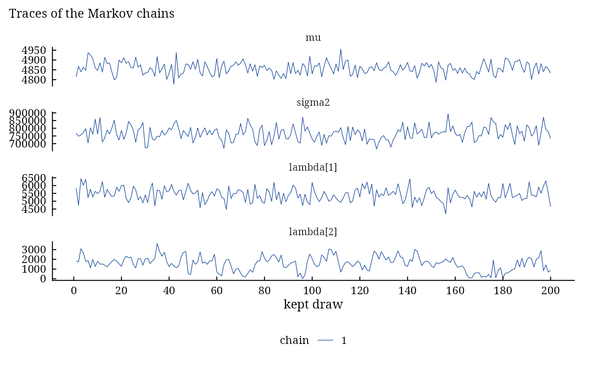
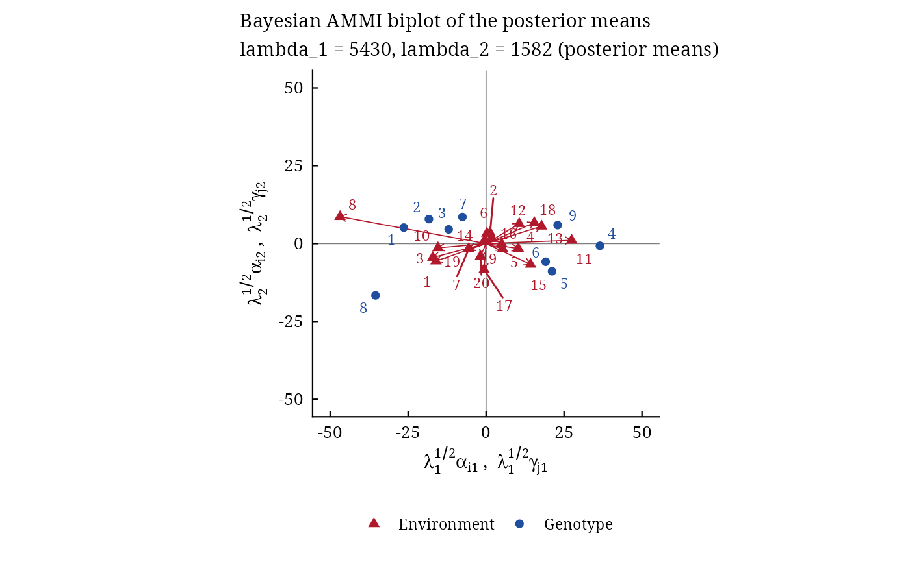

bayes_ammi() estimates the additive main effects and multiplicative interaction (AMMI) model of a
multi-environment trial by the Gibbs sampler of Crossa et al. (2011), or the GGE (sites regression, SREG) model
of Perez-Elizalde et al. (2012), for balanced or unbalanced trials, with one error variance or one for every
environment. The sampler is compiled (C++). Every parameter (overall mean, genotype and
environment effects, singular values, genotype and environment scores of the bilinear terms, error variance) has a
posterior distribution, so that the biplot carries statistical inference: highest posterior density (HPD)
regions around the scores show which genotypes and environments interact significantly and which form
homogeneous groups (biplots).
Usage
bayes_ammi(
.data,
.y,
.gen,
.env,
.rep,
.nIter = 1000L,
.k = 2L,
.burnin = 0L,
.thin = 1L,
.chains = 1L,
.priors = bam_priors(),
.level = 0.95,
.seed = NULL,
.align = TRUE,
.model = c("AMMI", "GGE"),
.het = FALSE,
.waic = TRUE
)
# Default S3 method
bayes_ammi(
.data,
.y,
.gen,
.env,
.rep,
.nIter = 1000L,
.k = 2L,
.burnin = 0L,
.thin = 1L,
.chains = 1L,
.priors = bam_priors(),
.level = 0.95,
.seed = NULL,
.align = TRUE,
.model = c("AMMI", "GGE"),
.het = FALSE,
.waic = TRUE
)Arguments
- .data
a data frame with one row per plot.
- .y, .gen, .env, .rep
the columns of the response, genotypes, environments and replicates: bare names, strings or vectors.
- .nIter
number of iterations kept per chain before thinning (after the burn-in).
- .k
number of bilinear terms \(K\) (default 2, as in Crossa et al. 2011).
- .burnin
number of iterations discarded at the start of every chain (default 0).
- .thin
keep every
.thin-th iteration (default 1).- .chains
number of chains (default 1; two or more give the Gelman-Rubin diagnostic).
- .priors
the priors, from
bam_priors().- .level
probability of the HPD intervals (default 0.95).
- .seed
integer seed for a reproducible run, or
NULL; the random number state of the session is restored afterwards.- .align
keep the sign of every bilinear term (see Signs; default
TRUE).- .model
"AMMI"(default) or"GGE"(sites regression).- .het
FALSE(default): one error variance;TRUE: one for every environment.- .waic
compute WAIC during sampling (default
TRUE; costs one pass over the plots per kept draw).
Value
An object of class c("bam_bayes_ammi", "bam_result", "list"); the components of the earlier
versions come first, the draws of all chains one after the other:
mu1data.table, columnmu: draws of the overall mean.tau1data.table, columntau: draws of the error variance \(\sigma^2\) (columnstau1, ...,tauEwith a variance for every environment).tao1data.table, columnstao1, ...,taoG: draws of the genotype effects (no columns for the GGE model).delta1data.table, columnsdelta1, ...: draws of the environment effects.lambdas1data.table, columnslambdas1, ...: draws of the singular values.alphas1,gammas1matrices with columns
.nIter(draw),GenorEnv(number) andalphas1, ... orgammas1, ...: draws of the genotype and environment scores.alphas0,gammas0data.tables: least-squares scores (the starting values).summarydata.table: posterior mean, standard deviation, Monte Carlo standard error, HPD interval, effective sample size and potential scale reduction factor of every parameter (Tables 1 and B1 of Crossa et al. 2011).scoresdata.table: posterior means of the biplot coordinates \(\lambda_k^{1/2}\alpha_{ik}\) and \(\lambda_k^{1/2}\gamma_{jk}\), with the mean of every genotype and environment.drawscoda::mcmc.listof all parameters, one element per chain.diagnosticslist:
gelman(potential scale reduction factors, two or more chains),raftery(Raftery-Lewis dependence factors),heidel(Heidelberger-Welch stationarity and half-width tests), for the overall mean, the error variance, the main effects and the singular values.lslist: the least-squares AMMI estimates (
mu,tau,delta,lambda,alpha,gamma,sigma2).fitlist:
devianceof every kept draw,Dbar,Dhat,pD,DIC, and with.waic = TRUElppd,p_waic,WAIC,waic_seandwaic_i(the contribution of every observed plot to WAIC, in the order of the data).settingslist: iterations, burn-in, thinning, chains, number of terms, model, variances, priors (with the scale of the error variance filled in), level, seed, alignment, time used.
Methods: print(), summary(), plot() (which = c("trace", "density", "biplot",
"effects")), biplots(), bam_interpret(), the decision tools
(bam_predict(), bam_winners(), bam_superiority(),
bam_ranks(), bam_stability()), bam_compare(), bam_ppc() and
posterior::as_draws_df() (bam-draws).
Details
Model. The response of genotype \(i\) in replicate \(l\) of environment \(j\) is
$$y_{ijl} = \mu + \tau_i + \delta_j + \sum_{k=1}^{K} \lambda_k \alpha_{ik} \gamma_{jk} + e_{ijl}, \qquad
e_{ijl} \sim N(0, \sigma^2),$$
with \(\sum_i \tau_i = \sum_j \delta_j = 0\), \(\lambda_1 \ge \cdots \ge
\lambda_K > 0\), and genotype and environment score vectors
\(\boldsymbol{\alpha}_k\), \(\boldsymbol{\gamma}_k\) of unit length, orthogonal to
\(\mathbf{1}\) and to each other (\(K\) = .k). The priors are those of bam_priors().
Conditional distributions. With \(\mathbf{Y}\) the \(G \times E\) table of cell means,
\(B\) replicates, \(n = BGE\) observations, the orthonormal contrasts
\(\mathbf{K}_G\) of matrix_k() (\(\boldsymbol{\tau} = \mathbf{K}_G^\top
\mathbf{t}\)) and \(c_x = \sigma^2 / \sigma^2_x\), each iteration draws
$$\mu \sim N\left(\frac{n\bar{y} + c_\mu \mu_0}{n + c_\mu}, \frac{\sigma^2}{n + c_\mu}\right), \qquad
\mathbf{t} \sim N\left(\frac{BE\,\mathbf{K}_G\bar{\mathbf{y}}_{G} + c_\tau \mathbf{K}_G\mathbf{m}_\tau}{BE +
c_\tau}, \frac{\sigma^2}{BE + c_\tau}\mathbf{I}\right),$$
the same for \(\boldsymbol{\delta}\) with \(BG\), and for \(k = 1, \ldots, K\)
$$\lambda_k \sim N\left(\frac{B\,\boldsymbol{\alpha}_k^\top\mathbf{Y}\boldsymbol{\gamma}_k + c_\lambda
\lambda_0}{B + c_\lambda}, \frac{\sigma^2}{B + c_\lambda}\right) \textrm{ on } (\lambda_{k+1},
\lambda_{k-1}),$$
$$p(\boldsymbol{\alpha}_k \mid \cdot) \propto \exp\left(\frac{B\lambda_k}{\sigma^2}
\boldsymbol{\alpha}_k^\top\mathbf{Y}\boldsymbol{\gamma}_k\right), \qquad p(\boldsymbol{\gamma}_k \mid \cdot)
\propto \exp\left(\frac{B\lambda_k}{\sigma^2}\boldsymbol{\gamma}_k^\top\mathbf{Y}^\top
\boldsymbol{\alpha}_k\right),$$
von Mises-Fisher distributions on the unit sphere of the subspace orthogonal to \(\mathbf{1}\) and to the
other score vectors (Crossa et al. 2011, eq. 8-9), and finally
$$\sigma^2 \sim \frac{\nu S^2_0 + \mathrm{SSW} + B\sum_{ij}(\bar{y}_{ij} - \hat{y}_{ij})^2}{\chi^2_{\nu +
n}},$$
with SSW the within-cell sum of squares. The chains start at the least-squares AMMI fit (the first chain) or at
dispersed values (the others).
A variance for every environment (.het = TRUE): \(e_{ijl} \sim N(0, \sigma^2_j)\) with independent priors \(\mathrm{Inv}\textrm{-}\chi^2(\nu, S^2_{0j})\).
With weights \(w_j = 1/\sigma^2_j\) the genotype effects keep a closed normal
conditional (precision \(B\sum_j w_j\)); the overall mean and the environment effects are drawn
jointly; \(\lambda_k\) has precision \(B\sum_j w_j\gamma_{jk}^2\); the
genotype scores stay von Mises-Fisher; the environment scores have the Bingham-von Mises-Fisher conditional
$$p(\boldsymbol{\gamma}_k \mid \cdot) \propto \exp\left(B\lambda_k\sum_j w_j\gamma_{jk}r_{\cdot jk} -
\frac{B\lambda_k^2}{2}\sum_j w_j\gamma_{jk}^2\right),$$
(\(r_{\cdot jk} = \sum_i\alpha_{ik}r_{ijk}\) with \(r_{ijk}\) the cell
residual without term \(k\)), drawn by a Gibbs sweep in the eigenbasis of its quadratic term (Hoff 2009);
every \(\sigma^2_j\) is a scaled inverse chi-square with \(\nu + BG\) degrees of freedom.
GGE model (.model = "GGE"): \(y_{ijl} = \mu + \delta_j + \sum_k\lambda_k\alpha_{ik}\gamma_{jk}
+ e_{ijl}\): the genotype main effect is part of the
multiplicative terms, the genotype scores are orthogonal to \(\mathbf{1}\), the environment scores only to
each other (Perez-Elizalde et al. 2012). The conditional distributions are those above without
\(\boldsymbol{\tau}\) and without the constraint \(\boldsymbol{\gamma}_k \perp \mathbf{1}\).
Unbalanced trials. Missing plots and whole missing genotype-environment cells are completed by data augmentation: with \(B\) the largest number of replicates of a cell, every iteration first draws the missing plots from \(N(\eta_{ij}, \sigma^2_j)\), then the conditional distributions of the balanced design apply exactly (the plots are assumed missing at random). Every genotype and every environment needs some data.
Model choice. With .waic = TRUE the sampler accumulates the pointwise log-likelihood of the observed
plots, giving WAIC; the deviance of every kept draw gives DIC (component fit; bam_compare()).
Signs. The pair \((\boldsymbol{\alpha}_k, \boldsymbol{\gamma}_k)\) and its
negative give the same model. With .align = TRUE (default) every draw takes the sign that agrees with the
least-squares vectors, so that posterior means and HPD regions refer to one orientation of each axis; with
.align = FALSE a weak axis can switch sign during the run and its posterior means shrink towards zero.
Changes from the earlier versions. The singular values were computed once and never sampled; the error
variance was not returned (tau1 held the constant precision of the least-squares fit); the residuals for
\(\sigma^2\) were computed against the wrong environments; the within-cell sum of squares was a sum of
variances; the covariance matrices of the main effects were square roots of variances; the scores were not drawn
from their constrained conditional distributions; all \(\min(G, E) - 1\) axes were fitted.
tau1 now holds the draws of the error variance \(\sigma^2\).
References
Crossa, J., Perez-Elizalde, S., Jarquin, D., Cotes, J. M., Viele, K., Liu, G. and Cornelius, P. L. (2011). Bayesian estimation of the additive main effects and multiplicative interaction model. Crop Science, 51(4), 1458–1469. doi:10.2135/cropsci2010.06.0343
Viele, K. and Srinivasan, C. (2000). Parsimonious estimation of multiplicative interaction in analysis of variance using Kullback-Leibler information. Journal of Statistical Planning and Inference, 84(1–2), 201–219.
Perez-Elizalde, S., Jarquin, D. and Crossa, J. (2012). A general Bayesian estimation method of linear-bilinear models applied to plant breeding trials with genotype x environment interaction. Journal of Agricultural, Biological, and Environmental Statistics, 17, 15–37. doi:10.1007/s13253-011-0063-9
Hoff, P. D. (2009). Simulation of the matrix Bingham-von Mises-Fisher distribution, with applications to multivariate and relational data. Journal of Computational and Graphical Statistics, 18(2), 438–456. doi:10.1198/jcgs.2009.07177
Wood, A. T. A. (1994). Simulation of the von Mises Fisher distribution. Communications in Statistics - Simulation and Computation, 23(1), 157–164.
Author
Muhammad Yaseen (myaseen208@gmail.com), Jose Crossa (j.crossa@cgiar.org), Sergio Perez-Elizalde (sergiop@colpos.mx), Diego Jarquin (diego.jarquin@gmail.com), Jose Miguel Cotes, Kert Viele, Genzhou Liu, Paul L. Cornelius
Examples
data(Maiz)
fm1 <-
bayes_ammi(
.data = Maiz
, .y = y
, .gen = entry
, .env = site
, .rep = rep
, .nIter = 200
, .k = 2
, .burnin = 50
, .thin = 1
, .chains = 1
, .priors = bam_priors(
mu_mean = 0
, mu_var = 1e+8
, tau_mean = 0
, tau_var = 1e+8
, delta_mean = 0
, delta_var = 1e+8
, lambda_mean = 0
, lambda_var = 1e+8
, nu = 1
, s2 = NULL
)
, .level = 0.95
, .seed = 1
, .align = TRUE
, .model = "AMMI"
, .het = FALSE
, .waic = TRUE
)
fm1
#> Bayesian AMMI with 2 multiplicative term(s): 9 genotypes, 20 environments, 4 replicates
#> 1 chain(s) x 200 kept draws (iterations 200 after a burn-in of 50, thinning 1); 0.3 s
#>
#> Posterior means, standard deviations and 95% HPD intervals
#> parameter mean sd lower upper ess
#> <char> <num> <num> <num> <num> <num>
#> 1: mu 4857.91 31.96 4800.691 4.914e+03 200
#> 2: sigma2 767184.71 45730.32 669188.542 8.439e+05 200
#> 3: tau[1] -231.28 91.35 -388.746 -4.867e+01 171
#> 4: tau[2] -252.16 93.17 -407.849 -6.692e+01 200
#> 5: tau[3] -37.89 95.83 -238.140 1.223e+02 179
#> 6: tau[4] 356.94 88.97 190.362 5.151e+02 152
#> 7: tau[5] 397.47 95.34 208.367 5.732e+02 253
#> 8: tau[6] 471.30 93.20 237.659 6.101e+02 200
#> 9: tau[7] -185.04 97.26 -340.104 3.038e-01 245
#> 10: tau[8] -585.71 96.56 -746.176 -3.961e+02 200
#> 11: tau[9] 66.37 85.19 -58.774 2.596e+02 200
#> 12: delta[1] -1252.96 137.71 -1509.876 -1.024e+03 200
#> 13: delta[2] -647.19 133.05 -872.560 -3.726e+02 200
#> 14: delta[3] 242.18 133.35 7.852 4.659e+02 102
#> 15: delta[4] 349.18 139.69 107.708 6.487e+02 200
#> 16: delta[5] 90.65 138.09 -187.350 3.339e+02 200
#> 17: delta[6] 1460.85 140.77 1149.201 1.688e+03 232
#> 18: delta[7] -1629.41 142.16 -1900.382 -1.356e+03 200
#> 19: delta[8] -807.59 147.19 -1110.935 -5.353e+02 200
#> 20: delta[9] 125.03 143.85 -129.000 4.055e+02 200
#> 21: delta[10] -1921.80 144.25 -2193.943 -1.671e+03 200
#> 22: delta[11] 448.31 146.61 187.733 7.268e+02 200
#> 23: delta[12] 2666.14 137.75 2436.113 2.944e+03 200
#> 24: delta[13] 1459.55 149.74 1101.625 1.720e+03 152
#> 25: delta[14] 1184.61 142.66 911.328 1.433e+03 269
#> 26: delta[15] 202.17 141.00 -48.414 4.562e+02 200
#> 27: delta[16] 558.89 147.45 258.299 7.884e+02 200
#> 28: delta[17] 18.41 148.99 -274.616 2.726e+02 200
#> 29: delta[18] -307.54 144.25 -570.249 -4.447e+01 200
#> 30: delta[19] -2221.99 139.07 -2466.320 -1.961e+03 200
#> 31: delta[20] -17.50 130.60 -255.149 2.115e+02 200
#> 32: lambda[1] 5430.16 426.52 4684.185 6.262e+03 200
#> 33: lambda[2] 1582.35 733.24 85.287 2.817e+03 48
#> parameter mean sd lower upper ess
#> <char> <num> <num> <num> <num> <num>
#>
#> Scores of the bilinear terms: x$summary (blocks alpha, gamma); biplot coordinates: x$scores
#>
#> Sources: Crossa et al. (2011); Spiegelhalter et al. (2002); Watanabe (2010).
#> Full references: bam_cite(x).
head(fm1$summary)
#> parameter block label axis mean sd mc_se
#> <char> <char> <char> <int> <num> <num> <num>
#> 1: mu mu NA 4857.9111 31.96193 2.260050
#> 2: sigma2 sigma2 NA 767184.7135 45730.31672 3233.621706
#> 3: tau[1] tau 1 NA -231.2828 91.34888 6.989273
#> 4: tau[2] tau 2 NA -252.1590 93.17139 6.588212
#> 5: tau[3] tau 3 NA -37.8914 95.83397 7.159041
#> 6: tau[4] tau 4 NA 356.9382 88.96615 7.225278
#> lower upper ess rhat
#> <num> <num> <num> <num>
#> 1: 4800.6912 4914.38146 200.0000 NA
#> 2: 669188.5421 843896.00963 200.0000 NA
#> 3: -388.7465 -48.66795 170.8214 NA
#> 4: -407.8490 -66.91842 200.0000 NA
#> 5: -238.1400 122.30875 179.1964 NA
#> 6: 190.3616 515.10218 151.6144 NA
fm1$fit$WAIC
#> [1] 11865.77
plot(x = fm1, which = "trace")

plot(x = fm1, which = "biplot")
